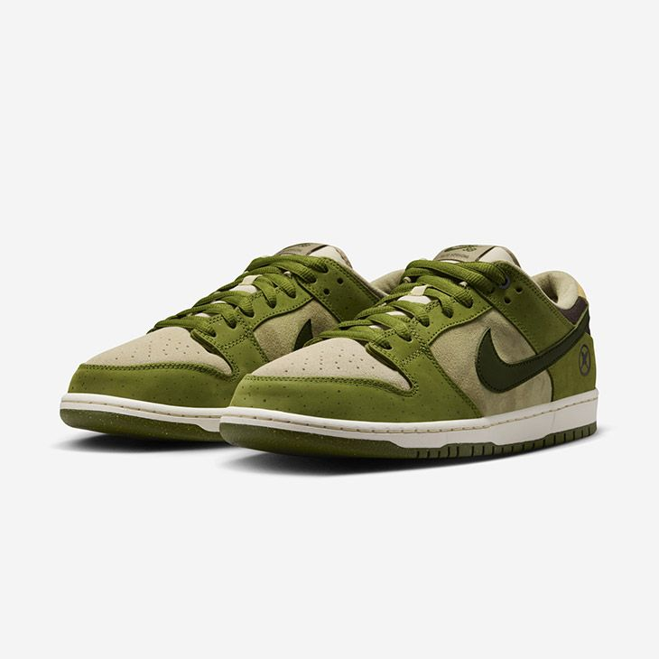
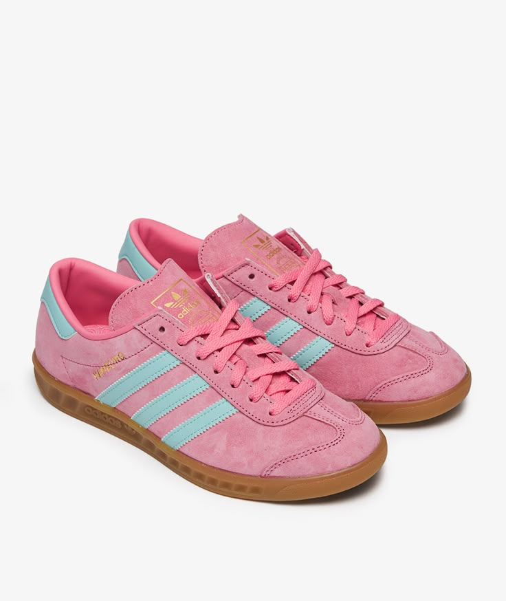
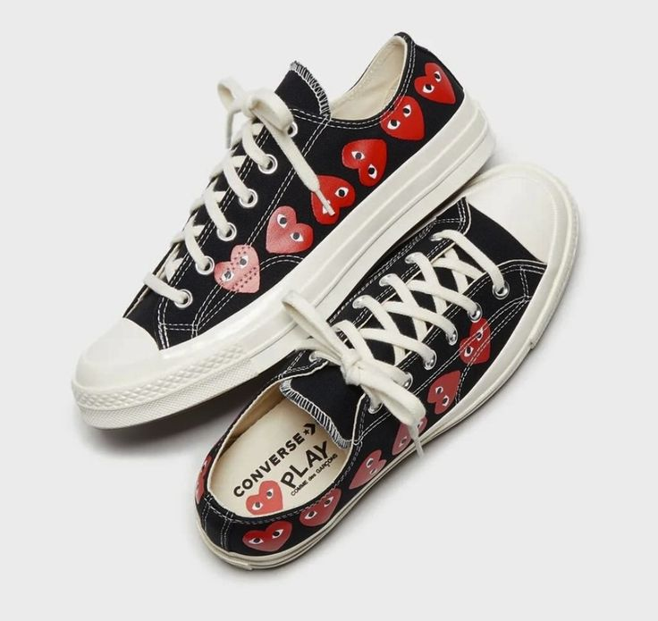

Sepatu Sneakers Populer

Nike SB Dunk Low "Asparagus Vibes"
Kolaborasi bersama Yuto Horigome dengan warna hijau asparagus dan aksen tan-beige yang earthy.
Lihat Detail

Adidas Hamburg "Cotton Candy Pop"
Warna pink manis & biru muda memberikan kesan feminin dan retro modern.
Lihat Detail
Onitsuka Tiger Mexico 66
Sentuhan vintage dengan leather cream, strip hitam, dan aksen gold di tumit.
Lihat Detail

Converse Chuck 70 x CDG
Kolaborasi penuh karakter dengan motif hati khas Comme des Garçons.
Lihat Detail